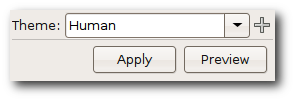

GTK Design anpassen
Archivierte Anleitung
Dieser Artikel wurde archiviert, da er - oder Teile daraus - nur noch unter einer älteren Ubuntu-Version nutzbar ist. Diese Anleitung wird vom Wiki-Team weder auf Richtigkeit überprüft noch anderweitig gepflegt. Zusätzlich wurde der Artikel für weitere Änderungen gesperrt.
Anmerkung: Eine aktuelle Anleitung ist im Artikel GTK+/Design wechseln zu finden
Zum Verständnis dieses Artikels sind folgende Seiten hilfreich:
GTK Engines stellen den Fensterinhalt von Programmen dar - wenn diese unter Verwendung von GTK programmiert worden sind. Dazu zählen z.B. alle der in Ubuntu, Xubuntu und Lubuntu verwendeten Programme. Dieser Artikel gibt eine Übersicht über die Möglichkeiten, das Aussehen solcher Programme durch die Auswahl eines Designs (engl. Theme) zu beeinflussen. So kann auch unter weniger verbreiteten Fenstermanagern das Aussehen von Programmen, die GTK verwenden, optisch ansprechend gewählt werden.
Desktop-Umgebungen¶
Die Desktop-Umgebungen haben jeweils eigene Konfigurationsdialoge, welche das Aussehen von GTK-Programme anpassen. Die folgende Liste verweist auf die jeweilige Anleitung:
Konfigurationsmöglichkeiten¶
Grundsätzlich wird bei diesen Möglichkeiten die Datei ~/.gtkrc-2.0 angepasst. Jede GTK-Engine hat mindestens eine gtkrc, in der die Regeln stehen, wie die Fenster aussehen sollen.
Per Programm¶
Es gibt nur wenige, dafür aber intuitiv bedienbare Tools, welche die gtkrc selbst schreiben.
GTK Theme Switch¶
 gtk-theme-switch  ist ein sehr einfaches Programm, welches über das Paket
ist ein sehr einfaches Programm, welches über das Paket
gtk-theme-switch (universe [2] )
 mit apturl
mit apturl
Paketliste zum Kopieren:
sudo apt-get install gtk-theme-switch
sudo aptitude install gtk-theme-switch
installiert wird [1]. Es hat keinen Menüeintrag, kann aber mit folgenden Befehl gestartet [3] werden:
gtk-theme-switch2
Gtk+ 2.0 Change Theme¶
gtk-chtheme wird über das gleichnamige Paket
gtk-chtheme (universe [2])
mit apturl
Paketliste zum Kopieren:
sudo apt-get install gtk-chtheme
sudo aptitude install gtk-chtheme
installiert [1]. Im Unterschied zu gtk-theme-switch kann man die Änderungen gleich sehen.
Gestartet[3] wird das Programm durch den Befehl:
gtk-chtheme
LXAppearance¶
LXAppearance kommt aus dem LXDE Projekt und kann über das folgende Paket installiert werden:
lxappearance
mit apturl
Paketliste zum Kopieren:
sudo apt-get install lxappearance
sudo aptitude install lxappearance
Gestartet wird das Programm dann mit dem Befehl [3]:
lxappearance
Das besondere an dem Programm ist, dass man damit nicht nur das GTK-Design verändern kann, sondern unter anderem auch die verwendeten Symbole (Icons) oder die Schriftart.
Von Hand¶
GTK 2¶
Man öffnet mit einem Editor [4] die Datei ~/.gtkrc-2.0 bzw. erstellt sie, wenn sie noch nicht existiert und fügt die folgende Zeile ein:
include "~/.themes/NAME_DES_THEMES/gtk-2.0/gtkrc"
Wichtig ist, dass die include-Zeile immer auf die gtkrc-Datei des gewünschten GTK-Desgins verweist. Nach einem Neustart des Fenstermanager wird das Design aktiviert. Die Designs aus den Quellen liegen meist unter /usr/share/themes.
Programme, welche mit Rootrechten laufen, lesen die gtkrc-2.0 aus dem /root/ Ordner, deswegen sollte eine Kopie bzw. Verweis auch im Ordner /root/ sein. Benötigt wird das z.B. bei Synaptic, da man nur mit Rootrechten Programme installieren kann.
- Erstellt mit Inyoka
-
 2004 – 2017 ubuntuusers.de • Einige Rechte vorbehalten
2004 – 2017 ubuntuusers.de • Einige Rechte vorbehalten
Lizenz • Kontakt • Datenschutz • Impressum • Serverstatus -
Serverhousing gespendet von